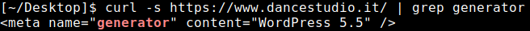
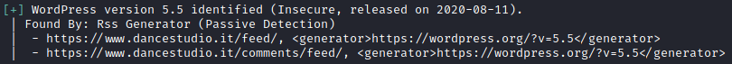

version of WordPress
Determine the version of WordPress running on the site
By default the version of WordPress is shown in the source code of the home page.
•
Firefox:
1) <CTRL>-U to view the source code
2) <CTRL>-F for "generator" to see
the version
• Curl:
◇ The
"-s" flag is for "silent" which does not show the progress meter
root@kali# curl -s https://www.dancestudio.it/ | grep generator
• WPScan
root@kali# wpscan --url https://www.dancestudio.it/ --random-user-agent

Use Searchsploit to check for exploits that match the version of wordpress
root@kali# searchsploit wordpress 5.5